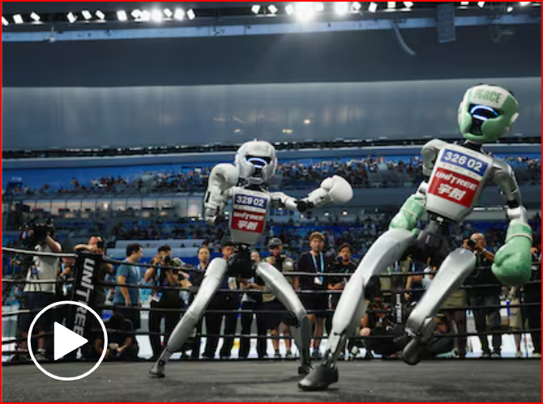
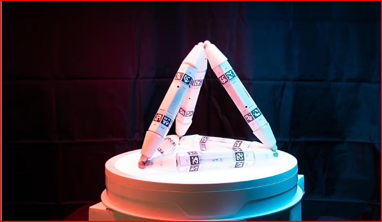
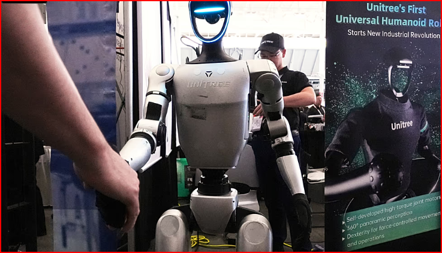
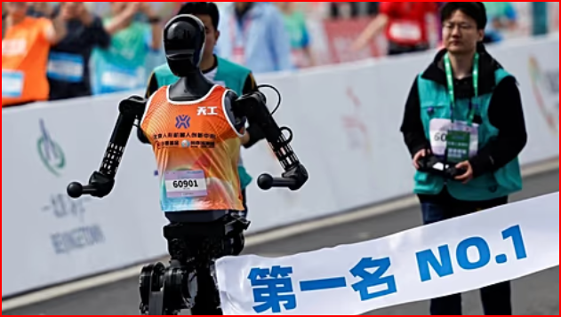
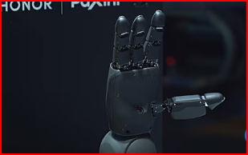

Mónica Rikic, artista electrónica: “La tecnología no hay que humanizarla, porque ya es humana” La creadora catalana ha presentado la instalación de un robot de asistencia en la exposición ‘Simbiòpolis’ del Palau Robert.
El salto que viene en la IA generativa: los grandes modelos para recrear el mundo físico Google, Meta, Amazon o Nvidia ya han dado pasos hacia este tipo de tecnología para generar entornos virtuales realistas, que promete un enorme desarrollo para los robots y los vehículos autónomos

China celebra las primeras ‘olimpiadas’ de robots como escaparate de su ambición tecnológica.

¿Un Robot 'caníbal'? Científicos desarrollan un robot que puede crecer y curarse comiéndose a otros .

Las esperanzas de EE.UU. de superar a China en la carrera de la robótica humanoide pueden verse truncadas por los aranceles.

Este robot humanoide chino de 1,80m ha corrido y acabado una media maratón en Pekín
Las acciones de Nvidia caen tras los anuncios de nuevos chips de IA
